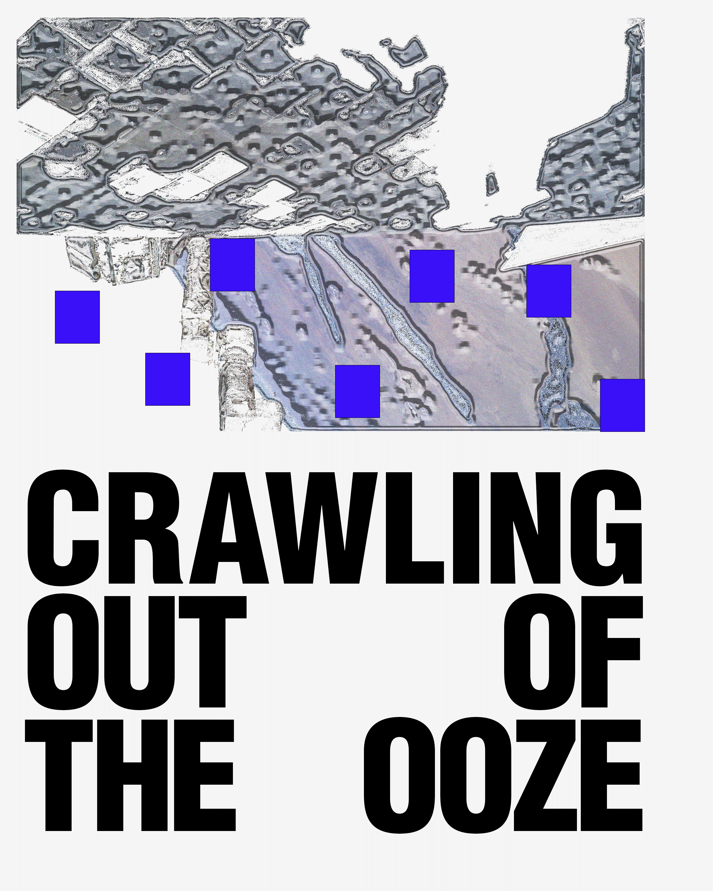
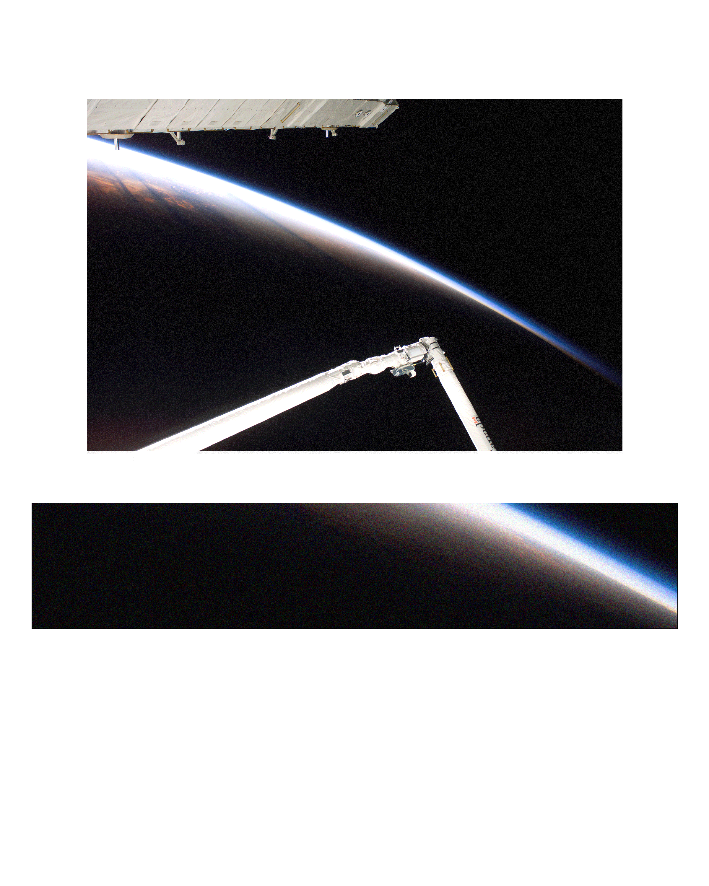
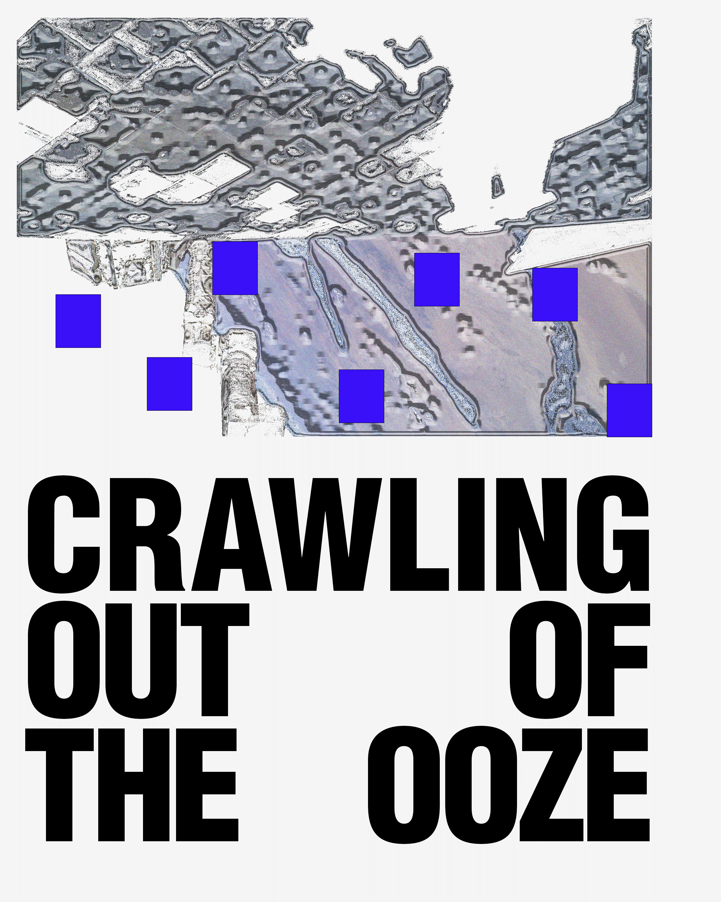
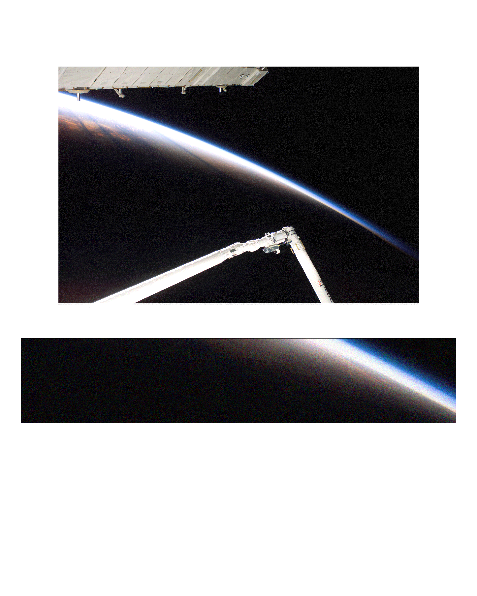
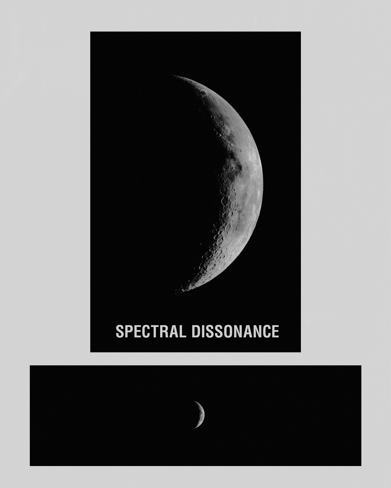
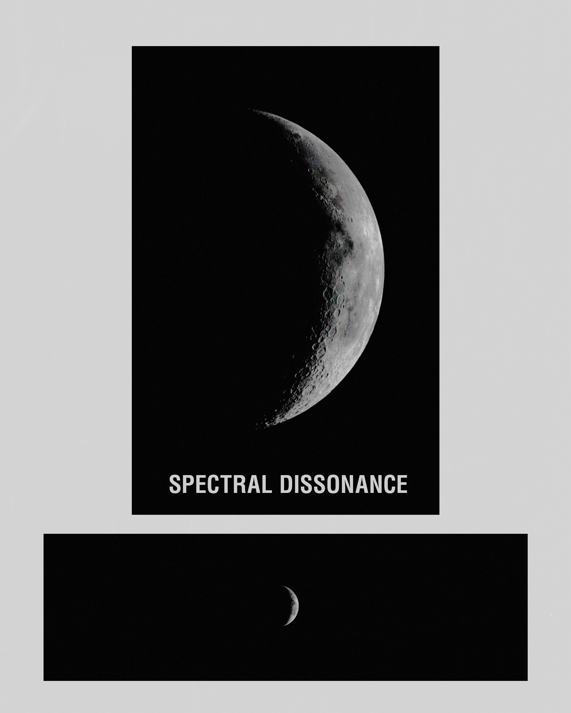

an interview with myself, beginning on friday october 17th, 2024. written beginning at 12:35pm and ending at 2:00pm, continued on saturday october 19th, 2024 beginning at 11:31 am and ending at 2:15pm, continued on monday october 21st, 2024 at 8:56pm and finally concluding at 9:25pm
the world is a rich and mysterious place. although we have globalized every industry, every interaction,
every source of joy that we can we still lack a genuine connection to one another. even on a smaller
scale there is a lack of community and care between people that see each other every day. the world is a
space, communities exist in and as spaces, they can inhabit physical, written, pictorial, or digital
boundaries. the world is filled with an expanse of communities that range from entirely niche to massive
pop culture. but, ultimately, many of these communities barely scrape the surface of interaction, and
instead, function as what could be considered 'hug-boxes' places where no strife, no problems, no
dialectic ever occurs. these types of communities can only be critiqued in-so-far as society itself can
be critiqued. the desiring machine, and thus the desiring production of said machine, are where these
problems lie ultimately. our desire-production is born out of a lack of lack, a fully frontal force of
societal repression (both real and imagined), and of course the economic disparity that many in the
world face. these 'hug-box' communities exist because those within them do not wish to be confronted by
the real, to be confronted by their true desire-production that stems from their body without organs and
the desiring machine that attaches itself to it. in so far as society can be blamed though so can the
community members themselves, for our society is built upon the great rhizomic structure of historical
and dialectical materialism, the interconnections and associations of every object, action, word, etc...
that has and will ever exist builds up the base for our societal super structure. the socius that we
inhabit is a form and extension of our desiring-production and social-production, whether we are aware
of this fact or not is meaningless. the synthesis of the past, present, and future again serve to define
our societal structure, when we are decaying towards the dying future though we must question whether
our passive consumption of our present and past is as good of a thing as we have been left to think.
"the world" at large is always at odds with itself, very few people within the total population are
truly ever working towards rectifying any of these issues that each and everyone of us either directly
or indirectly face. when i imagine the world, and then when i think of the phrase "the world," i come to
2 different conclusions. one is an image, a ball of blue and green, with specks of white floating
around, cities, towns, jungles, animals, people. the other is a similarly expansive thought but one that
is filled with many more problems, poverty, climate change, genocide, the poisoning of our people and
land, inequality. it is an image in which cruelty trumps the joy and prosperity that exists in the
world. "the world" is reversing, receding into absolute destitution and desolation that will inevitably
bring the downfall of the world. when we imagine ourselves in "the world" we never imagine that things
are as heavy as they may seem, in fact so many things are unbearably light. this lightness though must
be harnessed, we must fight against the squalor that is coming and that is already here. we must lift
each other up and remind ourselves what it means to be human.
design is about tapping into the divine in unforeseen ways. if we could design god, how would it look? would it have to be readable, legible, and understood? no. so why must design be anything of that sort? it shouldn’t; truthfully, we are deluded by the preconceived notions that we have been sold. not simply as designers but as general consumers of knowledge. the divine is not waiting to be found; it exists constantly around us. hence, we can tap into it like a wellspring of the purest unadulterated water. but it is not nearly that simple because the divine also doesn’t want to be found. we must crack open everything in deluded enthusiasm, an ape on amphetamines. it is crashing all about without care or concern. this is my goal. others will direct themselves more nobly and politely, but i believe i must lose myself in my work to become new. i must let the torrent smash me over and over. i will become so empty and shattered until i am made new through the revolutionizing thought stored with the kernel of truth that rests inside the wellspring of the divine. as quickly as i crash without concern, i will also flutter gently. the dichotomy of man truthfully will lift us. when i fly, a new zen approaches me; my wings are soft and weightless. they do not make a sound, not even the slightest sound, when i fling myself here and there. i fling myself into the kernel, the golden goose egg, the shell of the divine. many names, same object. i crack it open, and i pour the fatty yolk onto myself. painting myself golden. this is heaven, and this is the twin souls combining. design is something like that i believe. an intersection of souls, we are addressing information. but information has become so inundating with bureaucracy that it may as well just not be. so we take that information and tell it what it really is; life. show it what it really is; air. we are mystics, alchemists, divine stupas are where we rest. this is our truth, this is the truth of the kernel flipped upside itself.
>when you think of the phrase "the world" what does that mean to you?
>what does design mean to you?
>and finally what do space and time mean to you?
space is such a beautiful and important concept, space and time go hand in hand and therefor are
inseparable. space passes through time just as time passes through space, they are forever in a cycle
building off of one another. when i specifically think of time i feel that time is so beautiful. that
when we imagine time we rarely imagine it as a form of unity. we see ourselves more commonly united and
universally entangled through conspicuous means. the products we consume, the cultures we share, these
conspicuous means and actions feel common place and virtually pre-ordained. ultimately though, the most
inconspicuous happenings are what unite us under a common legacy. time is that which is most
inconspicuous but most uniting. you may wake up and while the sun is playing with its rays across your
bedroom floor the moon gently nourishes the tired minds and eyes of those elsewhere. this is the same
moon that will nourish you hours from now though, and the same sn that will dance sporadically in the
eyes of excited youth babbling in their parents stroller. we are united through that which is completely
intangible, the passing of time. to dedicate ourselves to life is to dedicate ourselves to being alive,
to growing old, to passing through so many days that we lose count. time is unity, time is a flat circle
that we are all born, walk, and die on in this we must find the beauty in monotony, in surprises, in the
seasons changing and bringing with them the changes that are ultimately found within ourselves too. time
is love, beauty, unity, and it is also pain, hate, and division. but in this nuance we must understand
that we are all united under the same stretch that stands before us, unfurling itself infinitely into
the nothingness of tomorrow.
the same can be said for space, throughout this project i've truly realized that space is so much more
than a physical area or zone thay ou inhabit or exist in. space is a nearly infinite set of ideas,
concepts, feelings, digital, physical, and metaphysical areas. when we explore space we are not merely
groping around in our immediately recognizable zone or area, instead we are imagining new future, we are
imaging cryptic passageways that open up the realm of hyperstitious consciousness, realms and ideas that
inhabit the realm of desire-production, desire-machining, and desire-recording, we are saying that space
isn't anything but is everything. this rhizomic structure connects everything at once and denotes
different demarcations or injuctive difference that tells us that we are no more the mailman or the
housewife than we are ourselves. time and space are wrapping around us endlessly and the difference that
collides into us as we pass through this peripheral engagement allows us to gorge our bodies without
organs on so many wonderful desiring and social-production schemas. for we are truly lucky just to be
alive in a realm where space and time exist.
 





 


×